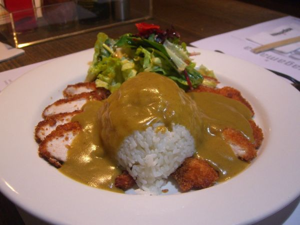

Lemon Chicken Rice Soup

Photo: avlxyz (CC BY-SA 2.0)
Directions
- Cook rice until tender. When cool add lemon juice.
- Cook vegetables in chicken stock until tender. Add rice mixture, diced chicken and parsley, Season to taste with salt and pepper.
- Cook rice until tender. When cool add lemon juice.
- Cook vegetables in chicken stock until tender. Add rice mixture, diced chicken and parsley, Season to taste with salt and pepper.
https://baron-3dl.github.io/normans-kitchen/recipe/lemon-chicken-rice-soup.html